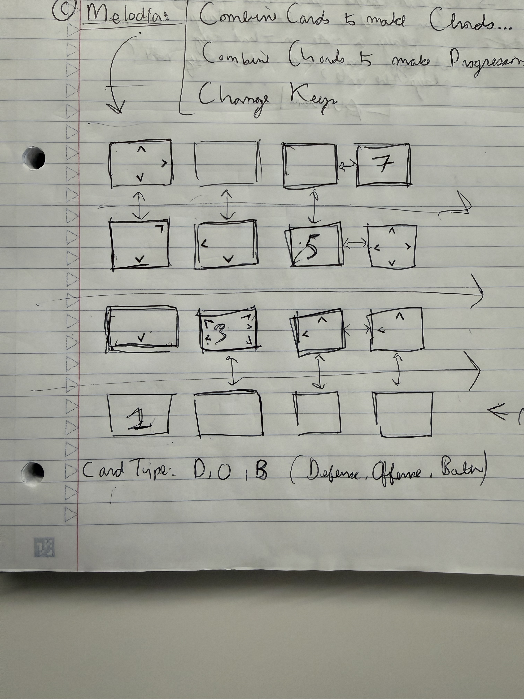

All of my projects are inspired by my passion for music, and a desire to create new mediums for teaching, learning, and playing music with one another. The overriding value is that we express (and learn) music more intuitvely, by sound, and no classically by notation. At least not initially

A musical physical-digitl card game played on a 4×4 grid. The cards Each player is dealt 8 digital cards per round. Every card can play a simple tone, show a basic note/symbol, and display arrows in any of the 8 cardinal/intercardinal directions: N, NE, E, SE, S, SW, W, NW. Cards snap into place with magnets, and the system tracks the grid so it can flash arrows showing where the next card is eligible to go.
Players take turns placing their 8 cards onto the 4×4 grid. Each card has a note identity and a randomized set of active arrows pointing in the 8 possible directions. A card can connect only where its arrows point to neighboring cards. Different modes can use different note sets, such as Triple Do/Re/Mi, Triad Do/Mi/So, Pentatonic, or Diatonic. Players score by creating valid musical and spatial connections. Poitns are earned by sequential notes, or chords, in any direction.
Key stone is a pendant style device the style of an Apple Watch, but circular. It also acts as a physical button. It is worn as a pendant around the neck. When you take it off and hold it, you can use it to train yourself to hear Solfege (or Relative Pitch) in 12 different keys. At rest, its display can show an Animal for any key you've learned (e.g. Eb = Elephant, D = Dog, etc.) When you shake the device it will start the game mode, and you click to start.
Keystone plays a musical chord for the key, then a note. You use swinigng gestures (like casting a spell) to indicate the note you think is correct. Confirmation gives the next prompt. Complete 3 correctly in a row, advance to next key. After all keys you advance to harder levels (3 notes, 5 notes, 7 notes, Chromatic [12]).